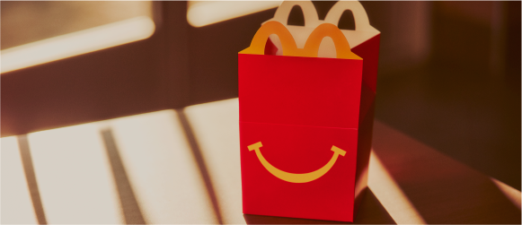

Se trata de un menú variado, que cumple con los criterios globales de nutrición de la compañía, compuesto por: un plato principal, acompañamiento, postre y una bebida. Además, incluye una sorpresa. McDonald´s transformó el menú de Cajita Feliz, y adaptó los ingredientes buscando una propuesta que sea tentadora para los niños por ser deliciosa y para los padres por ser nutritiva.
El menú consta de:
Todas las hamburguesas estan hechas de carne 100% vacuno
Incluye jugo de fruta que viene sin colorantes, ni azucares añadidos
Siempre esta disponible la opción de elegir agua, como parte del grupo de alimentos de la Cajita Feliz
La elaboración de los Mc nuggets de pollo sigue siendo un proceso controlado en todas sus fases, desde la granja hasta el restaurante
¡Todas las Cajitas Feliz tienen su juguete!
Este año McDonalsd´s trajo los juguetes de Warner Bros
Colección de libros: Yo Puedo
Con Cajita Feliz siempre se podrá elegir entre un juguete o un libro exclusivo gracias al programa de Cajita Feliz Libros. Fue pensado para fomentar la lectura en los niños, para que desarrollen su imaginación y disfruten de cada página. En asociación con la serie internacional de libros para niños “Little People, BIG DREAMS”, desde McDonald’s se cuenta historias de personas que han logrado cosas increíbles derribando barreras y superando obstáculos para inspirar a las infancias. Toda esta serie también cuenta con una experiencia digital extendida a la que es posible acceder escaneando el QR dentro de cada libro.